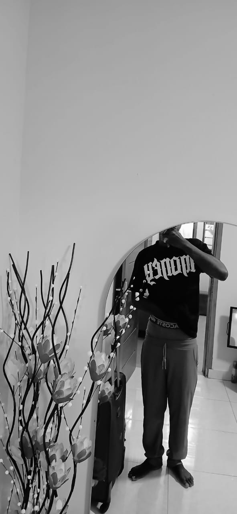

Je sais que ça ne va pas...
Quelques instants précieux...
Utilise les flèches pour faire défiler nos souvenirs. Clique sur l'écran pour l'agrandir.

Utilise les flèches pour faire défiler nos souvenirs. Clique sur l'écran pour l'agrandir.